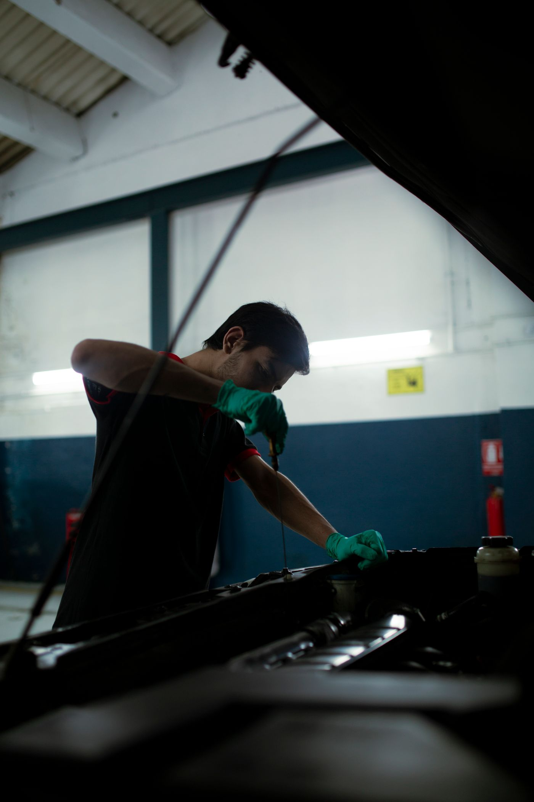
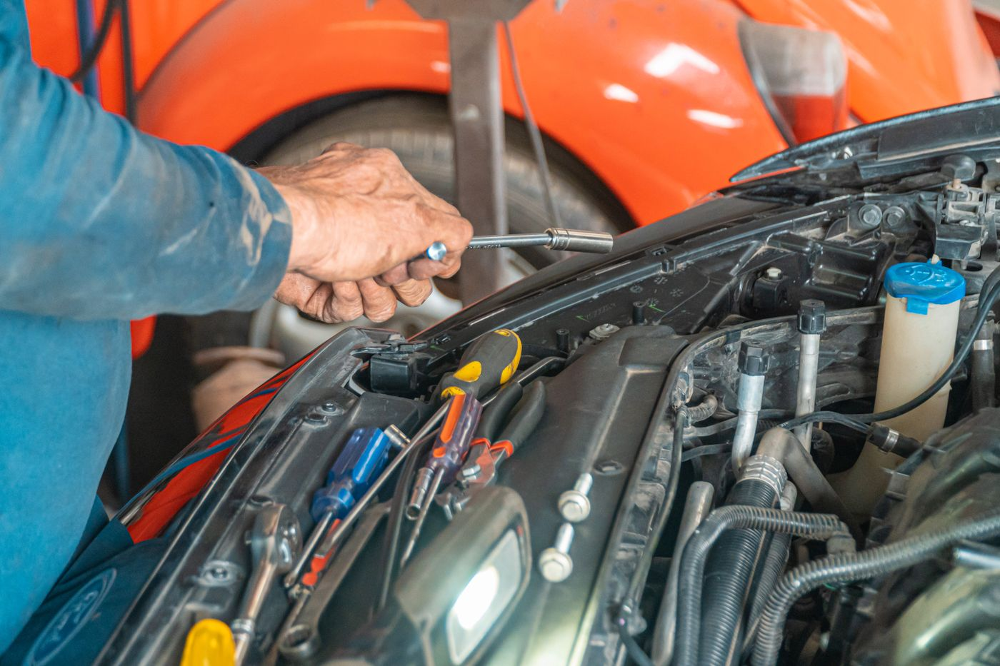

Óleo e filtros
Consulte a troca de óleo e os filtros disponíveis para o seu veículo. Informe a última troca e a quilometragem atual, se souber.
Consultar óleo e filtros ↗Manutenção automotiva na Paulin Auto Center. Fale sobre o que seu carro precisa e consulte o próximo atendimento.
Seu carro, sua rotina.
Conte com a Paulin.
A Paulin Auto Center é uma oficina automotiva. Pelo WhatsApp, você pode contar o que está acontecendo com o veículo, consultar serviços e combinar uma avaliação.
Tem uma dúvida sobre óleo, filtros ou um produto para o motor? Envie o modelo, o ano e a quilometragem. Essas informações ajudam a iniciar o atendimento.
Horário informado no perfil. Confirme os dias de funcionamento antes de sair.
Escolha o assunto para incluir na sua solicitação. Valores, peças e execução são confirmados no atendimento.
Consulte a troca de óleo e os filtros disponíveis para o seu veículo. Informe a última troca e a quilometragem atual, se souber.
Consultar óleo e filtros ↗Ruído, luz no painel ou uma mudança no funcionamento? Descreva os sinais para consultar a avaliação e os serviços disponíveis na oficina.
Conversar sobre manutenção ↗Fale com a Paulin sobre disponibilidade e indicação para o seu carro. A aplicação e a compatibilidade devem ser confirmadas antes do uso.
Tirar uma dúvida sobre o produto ↗Óleo, motor e atenção aos detalhes. Imagens ilustrativas de manutenção automotiva; não representam a estrutura ou trabalhos da Paulin.
Ver créditos das fotografias ↗

Preencha a ficha para preparar sua mensagem. Você confere e envia no WhatsApp.
(61) 8429-5779 ↗Prefere ir direto ao assunto?
Abrir uma conversa no WhatsApp ↗Como consulto um orçamento? Envie o modelo, o ano e o serviço desejado pelo WhatsApp. O valor depende da necessidade do veículo, das peças e da avaliação da oficina.
Preciso agendar? Consulte a disponibilidade antes de ir. A equipe confirma o horário e as condições do atendimento diretamente com você.
Qual óleo devo usar? A especificação depende do veículo. Informe o modelo e o ano e tenha o manual em mãos para consultar a indicação adequada.
A Paulin trabalha com Militec-1? O produto aparece no material fornecido pela empresa. Consulte o estoque, a indicação e os detalhes de aplicação no atendimento.
O atendimento é de segunda a sábado? Os dias de funcionamento ainda precisam ser confirmados. O perfil informa o horário de 08h às 18h.
Posso enviar uma foto ou vídeo? Sim, você pode compartilhar esses arquivos na conversa do WhatsApp para explicar sua dúvida. Eles não substituem a avaliação do veículo.
Confirme o endereço da oficina e a disponibilidade para receber o seu carro pelo WhatsApp.
Pedir localização ↗Endereço sob consulta.
Peça o ponto de localização na conversa para planejar sua visita.
Horário informado
08h — 18h